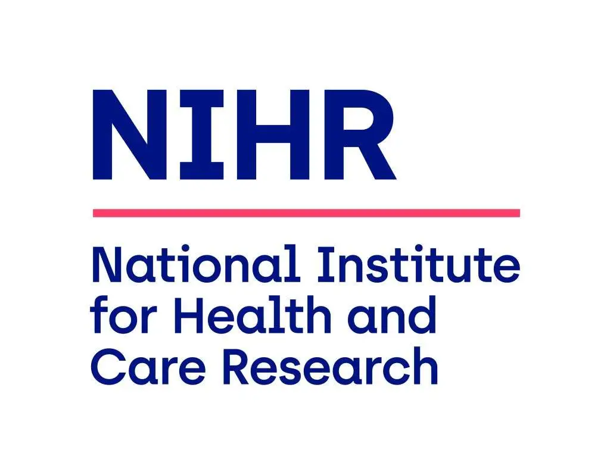

What is this event for?
NIHR has opened a significant call for research on Housing, Place and the Built Environment for an Ageing Population. The outline application deadline is 8 December 2026.
This sandpit is designed to help you get there. Rather than developing applications in silos, we're bringing together around 30–40 researchers, practitioners, and people with lived experience for a focused half-day. The aim is to identify strong research questions, form credible multi-disciplinary teams, and leave with a clear plan for an outline application.
It's a joint event between the Reimagine Ageing network and the Healthy Buildings Network — combining expertise across ageing research, housing design, public health, built environment, social sciences, and policy. Support from Horizon's team is expected and we're working with HESTIA and Remaking Places as additional partners.
Programme
Five NIHR-aligned research priorities
Each breakout group will focus on one of these themes — working from problem definition through to intervention, population, outcomes, and policy relevance.
Housing Quality, Design and Adaptation
How do housing conditions, design, and adaptations influence health, functional ability, and independence in later life? Both networks bring expertise here — ageing bodies and lived experience alongside building performance, sustainability, and housing intervention evaluation.
Neighbourhoods, Place and Health Inequalities
How do neighbourhood environments shape health outcomes and inequalities among older adults? Our combined strengths in planning, transport, spatial analysis, and place-based research position us well to study urban, rural, and deprived contexts using mixed methods and natural experiments.
Social Connection, Community and Mental Health
What role do social infrastructure, housing models, and community environments play in supporting wellbeing and connection? Strong expertise in loneliness, participatory research with older adults, social spaces, and community development spans both networks.
Inclusion, Diversity and Health Inequalities
How do the impacts of housing and place differ across populations — and how can we reduce those differences? Both networks have strong qualitative and quantitative capabilities for working with socioeconomically disadvantaged groups, disabled older adults, and under-represented communities.
Innovation and Horizon Opportunities
What does the third sector, or emerging work not covered above, bring to this space? This theme is intentionally open — for opportunities proposed by partners, insights from practice, or cross-cutting ideas that don't fit neatly into the other groups.
What happens next
Express your interest
The form takes around 5 minutes. We ask about you, your research theme, your team, and whether you'd like to give a flash talk.
Expression of interest form closes Friday, 7 August 2026. Places are limited.
Complete the Expression of Interest Form →This event supports applications to

Public Health Research Programme · EOI deadline 8 December 2026
Co-organised by
Supported and promoted by